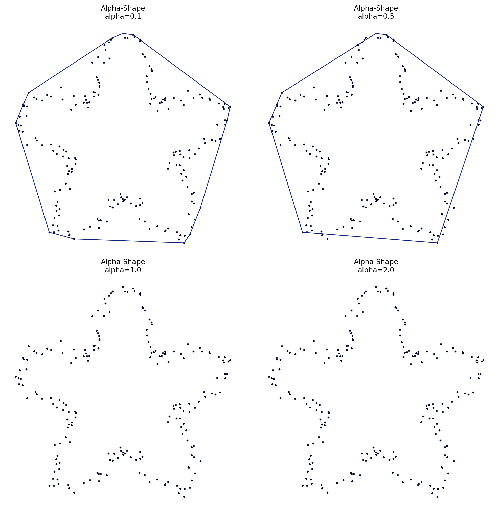

Alpha_Shape#
Constructs the α-shape boundary of a planar point set.
The α-shape is a generalization of the convex hull controlled by parameter α.
Constructor#
Alpha_Shape(setpoints, alpha, tol=1e-12, qhull_options=None)
Parameters:
setpoints (SetPoints): The set of points (must be 2D).
alpha (float): Alpha parameter controlling boundary tightness.
\(\alpha \approx 0\): Convex hull
\(\alpha > 0\): Tighter boundary (uses furthest-site Delaunay)
Larger \(|\alpha|\): Tighter fit to the point cloud
tol (float, optional): Numerical tolerance. Default \(10^{-12}\).
qhull_options (str, optional): Options for Qhull. Default None.
Mathematical Definition:#
The \(\alpha\)-shape \(S_\alpha(P)\) is defined using the \(\alpha\)-complex, which is a subcomplex of the Delaunay triangulation.
For \(\alpha > 0\), a simplex \(\sigma\) in the Delaunay triangulation is in the \(\alpha\)-complex if there exists an empty ball of radius \(r = \frac{1}{\alpha}\) that passes through the vertices of \(\sigma\) and contains no points of \(P\) in its interior.
Formal definition:#
For \(\alpha > 0\), let \(R(\sigma)\) denote the circumradius of simplex \(\sigma\). Then:
The \(\alpha\)-shape is the boundary of the union of simplices in \(C_\alpha(P)\).
Properties:
\(\alpha \to 0\): \(S_\alpha(P) \to \text{conv}(P)\) (convex hull)
\(\alpha \to \infty\): \(S_\alpha(P) \to P\) (individual points)
Intermediate \(\alpha\): Captures non-convex boundaries
Useful for shape reconstruction from point clouds
Can have multiple connected components
Edges form the boundary of the \(\alpha\)-complex
Value Errors:
Raises
ValueErrorifsetpointsis not 2DRaises
QhullErrorif fewer than 3 points providedRaises
TypeErrorifalphais not numericRaises
TypeErroriftolis not numeric
Example#
import proximitygraphs as pg
import numpy as np
theta = np.linspace(0, 2*np.pi, 200, endpoint=False)
r = 1 + 0.35*np.sin(5*theta)
x = r * np.cos(theta) + 0.05*np.random.default_rng(42).standard_normal(theta.size)
y = r * np.sin(theta) + 0.05*np.random.default_rng(43).standard_normal(theta.size)
pts = pg.SetPoints(np.column_stack([x, y]))
A01 = pg.Alpha_Shape(pts, alpha=0.1)
A05 = pg.Alpha_Shape(pts, alpha=0.5)
A10 = pg.Alpha_Shape(pts, alpha=-0.1)
A20 = pg.Alpha_Shape(pts, alpha=-0.5)
graphs = [A01, A05, A10, A20]
pg.draw_grid(graphs, 2, 2, figsize=(10, 10), details=True)
